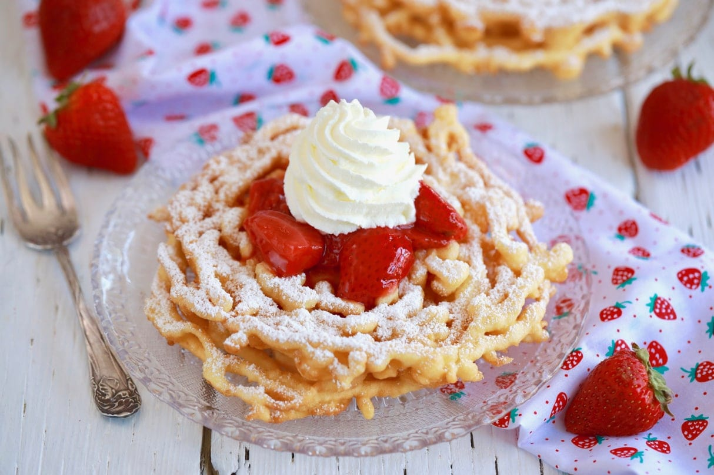

Funnel Cakes

Description
This funnel cake recipe will let you enjoy a delicious old-fashioned treat without going to a county fair. You'll need a funnel with a 1/2-inch opening that can hold a cup of batter.
Ingredients
- Oil
- Milk
- Eggs
- Flour
- Baking Powder
- Cinnamon
- Salt
- Sugar
Steps
- Make the batter
- Funnel the batter into the hot oil using circular motions
- Sprinkle the funnel cakes with powdered sugar before serving